I like drawing birds! They come in a bunch of different sizes and colors (honorary mentions secretary bird and great blue heron!), and are just an easy animal to doodle when I'm bored.
Top 5 birds I think are fun to draw ⸜( ´ ꒳ ` )⸝
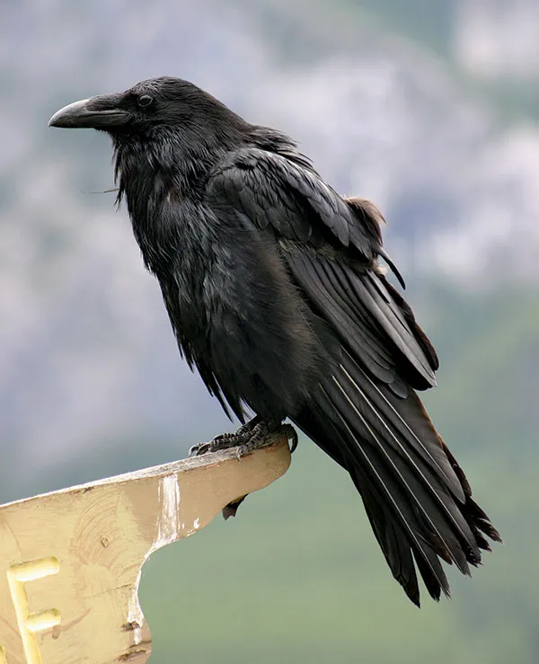
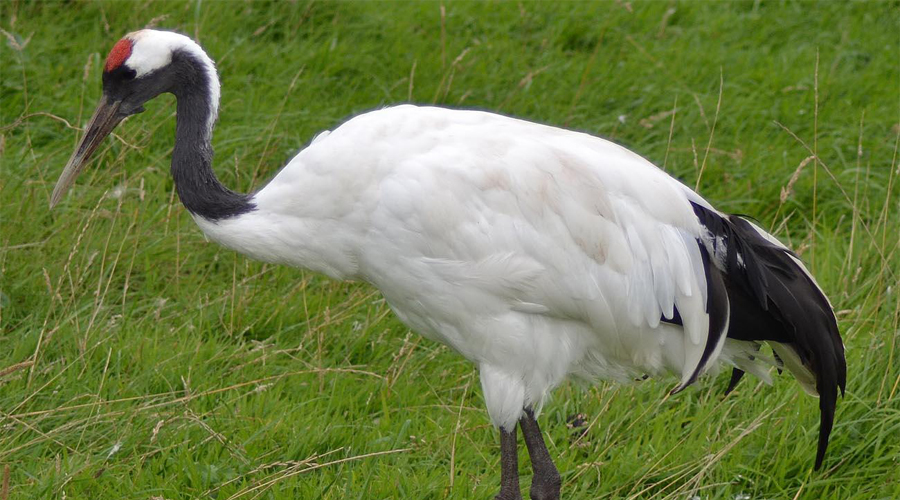
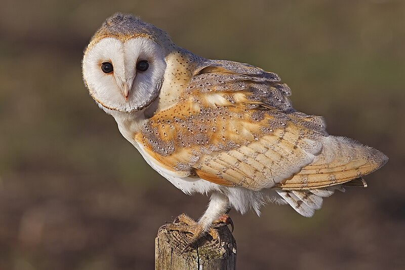

I love preparing fruit for people! I find cutting fruit meditative and relaxing, and I get to eat the results with my family. ⸜( *ˊᵕˋ* )⸝
5 fruits I like cutting (*￣▽￣)b
 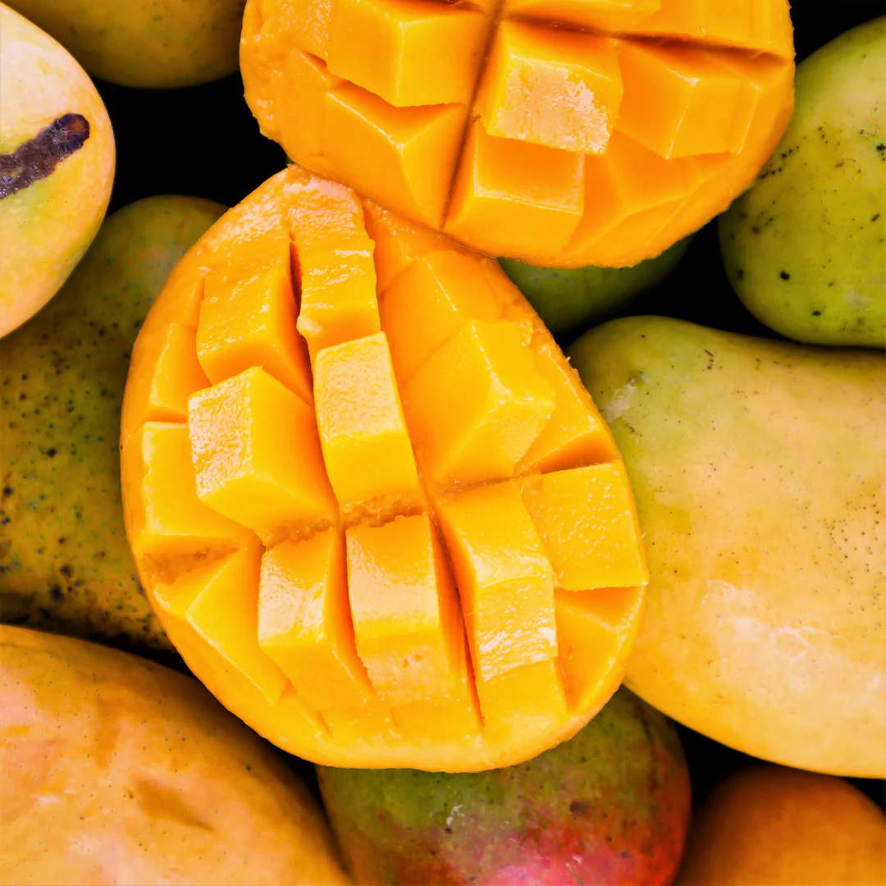
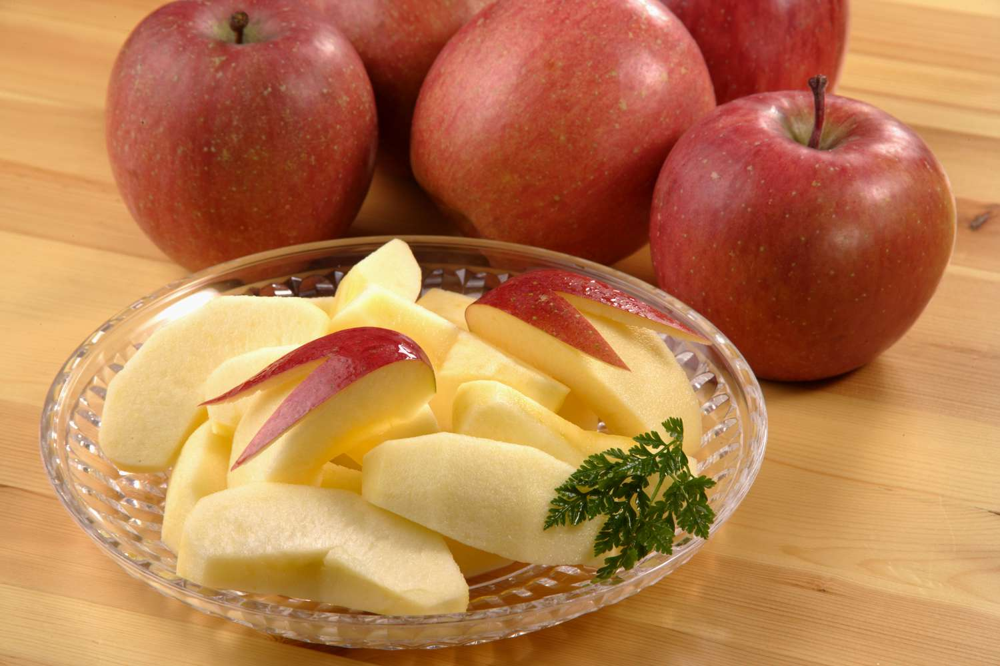
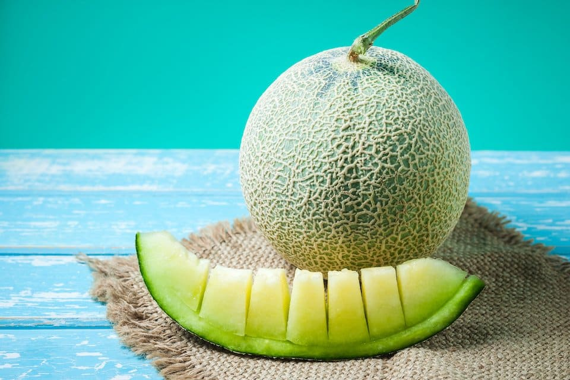
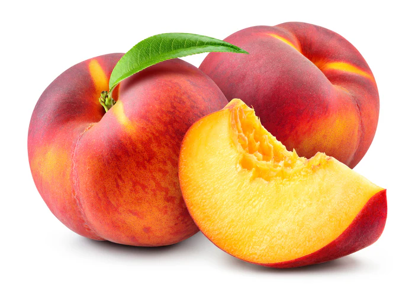
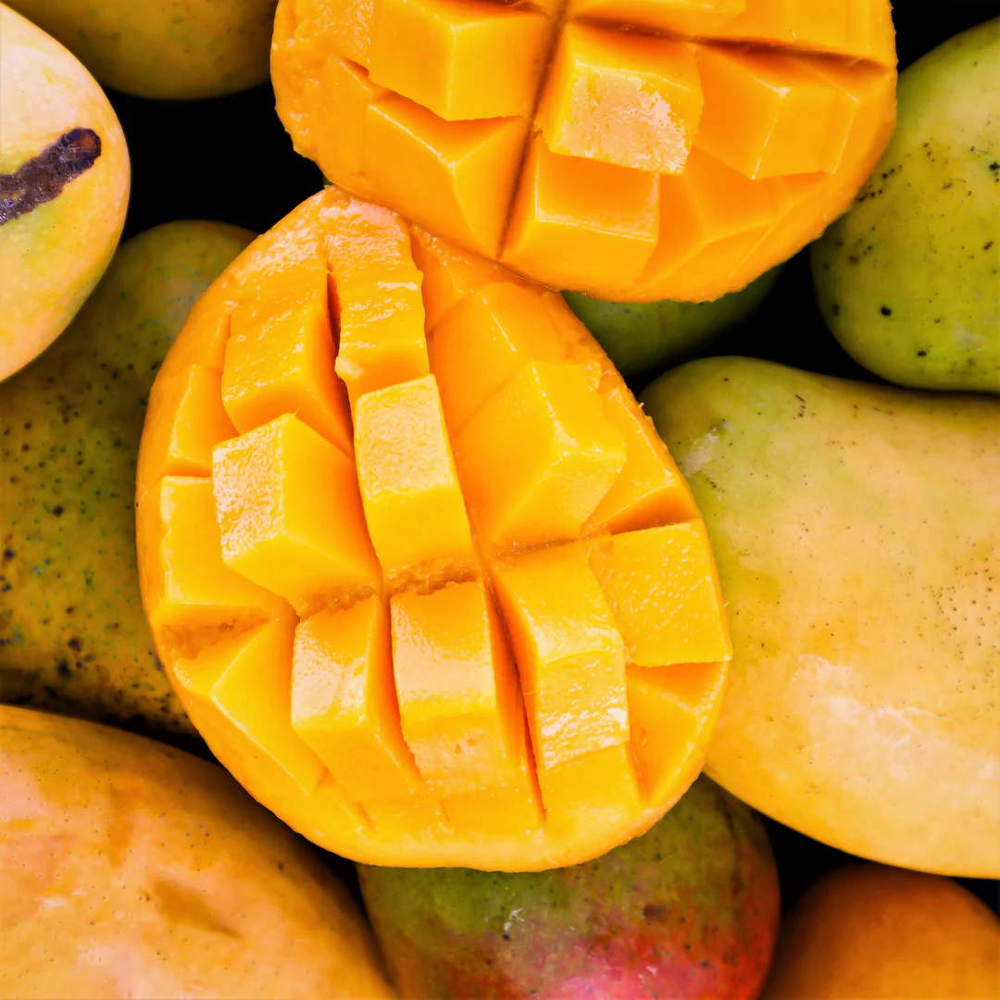
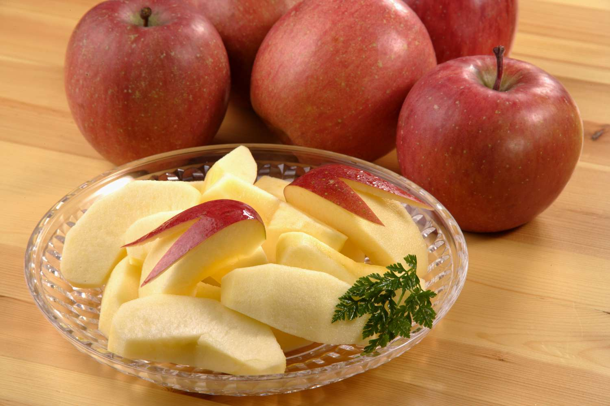
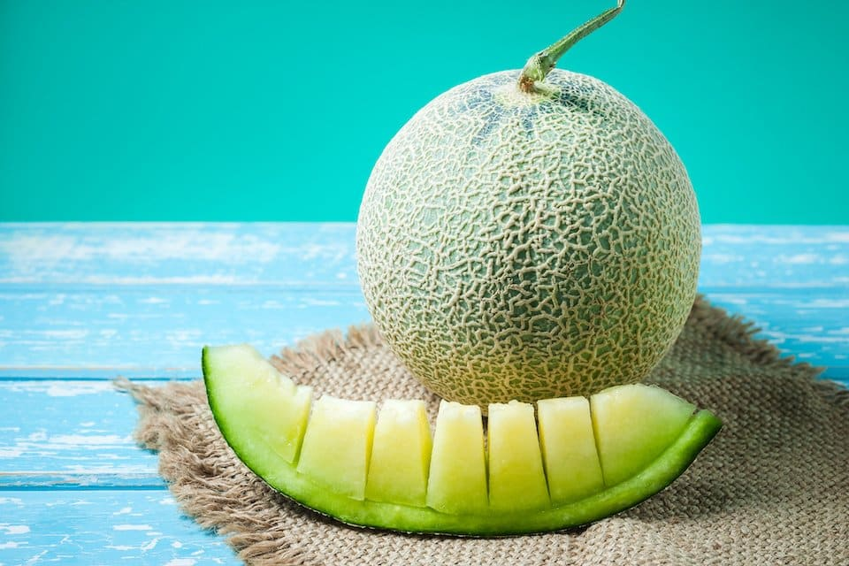
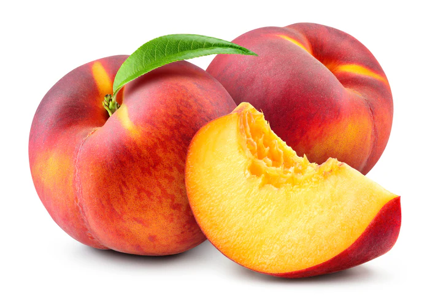